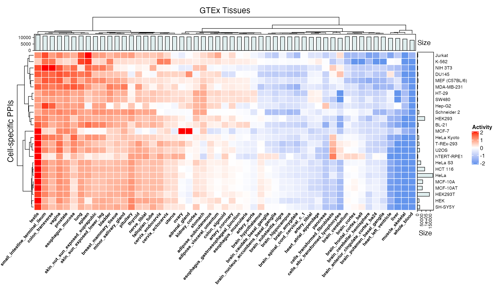

Previous efforts to infer environmental-specificity of PPIs includes integration of tissue-specific gene expression from GTEx. Integrating expression information to infer context may be useful, particulary when used with literature-derived annotations. Here we provide quick access to the processed data for expression of 16011 proteins across 53 derived from the Human Integrated Protein-Protein Interaction rEference (HIPPIE) and provide some useful examples for manipulating the data.
tissues <- read.delim("data/v_1_00/Tissues.txt")
tissues <- janitor::clean_names(tissues)
If a protein is expressed above a certain threshold in a given tissue, it is deemed active (1) in that tissue.
tissues[1:5,1:5]
adipose_subcutaneous adipose_visceral_omentum
A1BG 1 1
A1CF 0 0
A2M 1 1
A2ML1 0 0
A4GALT 1 1
brain_cerebellar_hemisphere brain_cerebellum brain_cortex
A1BG 1 1 1
A1CF 0 0 0
A2M 1 1 1
A2ML1 0 0 0
A4GALT 0 0 1dim(tissues)
[1] 16011 53Load in the PPIs…
ppi <- data.ppi("data/v_1_00/PPI-Context.txt")
Here we are just taking the top cell lines with the most PPIs to assign tissue specificity.
cells <- data.frame(sort(table(ppi$cell_name), decreasing=TRUE)) %>% magrittr::set_colnames(c("var", "freq")) %>% head(25) %$% var %>% as.character() head(cells)
[1] "HeLa" "HEK293T" "HEK293" "HCT 116" "MCF-10A" "MCF-10AT"dfs <- mapply(function(cell) { df <- ppi %>% dplyr::filter(cell_name == cell) %>% dplyr::select(gene_a, gene_b) }, cells, SIMPLIFY=FALSE)
An interaction is active in a tissue if both interacting partners are expressed in that tissue. Here is an example of using this data to create a PPI x Tissue matrix of tissue-specificity for the subset of PPIs annotated with the HeLa cell line.
df <- dfs[["HeLa"]] df %<>% dplyr::mutate(ppi = paste(gene_a, gene_b, sep=" / ")) example <- sapply(tissues, function(tissue) { tissue.expressed <- rownames(tissues)[tissue == 1] df$gene_a %in% tissue.expressed & df$gene_b %in% tissue.expressed }) %>% magrittr::set_rownames(df$ppi) dim(example)
[1] 179407 53example[1:5,1:5]
adipose_subcutaneous adipose_visceral_omentum
PIK3R2 / ERBB2 TRUE TRUE
SMURF2 / ARHGAP5 TRUE TRUE
NF2 / ERBB2 TRUE TRUE
SLA / VAV1 TRUE TRUE
LYN / KIT TRUE TRUE
brain_cerebellar_hemisphere brain_cerebellum brain_cortex
PIK3R2 / ERBB2 TRUE TRUE TRUE
SMURF2 / ARHGAP5 TRUE TRUE TRUE
NF2 / ERBB2 TRUE TRUE TRUE
SLA / VAV1 FALSE FALSE FALSE
LYN / KIT TRUE TRUE TRUEThe dimensionality of the data is large, rather we can try to summarize it by looking at the total activity of cell-specific PPIs across different GTEx tissues.
data <- lapply(dfs, function(df) { apply(tissues, 2, function(tissue) { expressed <- as.integer(tissue[df$gene_a] == 1 & tissue[df$gene_b] == 1) return( sum(expressed) / length(expressed) ) # Normalize by size }) })
mat <- do.call(cbind, data) mat[1:5,1:5]
HeLa HEK293T HEK293 HCT 116 MCF-10A
adipose_subcutaneous 0.7193309 0.6581378 0.8275424 0.6820748 0.5842403
adipose_visceral_omentum 0.7173633 0.6503012 0.8314263 0.6792751 0.5807414
brain_cerebellar_hemisphere 0.6936463 0.6195401 0.7784387 0.6628400 0.5628598
brain_cerebellum 0.7096769 0.6470538 0.7965289 0.6757960 0.5792096
brain_cortex 0.7127537 0.6516715 0.8110734 0.6772837 0.5840952ht <- HeatmapAnnotation(Size=anno_barplot(apply(tissues, 2, sum), gp=gpar(fill="azure2", color="azure4"))) hr <- rowAnnotation(Size=anno_barplot(sapply(dfs, nrow), gp=gpar(fill="azure2", color="azure4"))) mat.scaled <- t(apply(mat, 2, scale)) colnames(mat.scaled) <- rownames(mat) Heatmap(mat.scaled, name="Activity", col=colorRamp2(c(-2, 0, 2), c("cornflowerblue", "white", "red")), rect_gp=gpar(col="white"), cluster_rows=TRUE, cluster_columns=TRUE, top_annotation=ht, right_annotation=hr, clustering_distance_rows="euclidean", clustering_method_rows="ward.D", clustering_distance_columns="euclidean", clustering_method_columns="ward.D", column_title="GTEx Tissues", column_names_gp=gpar(fontsize=8, fontface=2), column_names_rot=50, row_title="Cell-specific PPIs", row_names_gp=gpar(fontsize=8), show_column_names=TRUE, show_row_names=TRUE)

Here is a heatmap visualizing overall activity of cell-specific PPIs across GTEx tissues, where each value represents the fraction of cell-specific PPIs active in a tissue. Barplots in the margins show the number of proteins defined as active in each tissue and the total number of PPIs in each cell line.